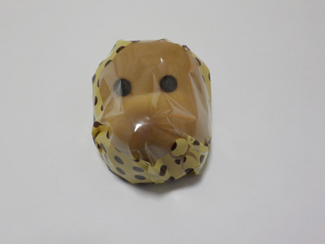

中浦食品のどじょうすくいまんじゅう（こしあん）
2021/12/15

普通のどじょうすくいまんじゅうは白あんですが、このどじょうすくいは黒い餡子です。
餡子の真ん中に栗ペーストが入っていますが、私には味がわかりませんでした。
白餡でも黒でも違和感なかったです。どじょうすくいまんじゅうはどじょうすくいまんじゅう味だなって思いました。
どじょうすくいと言えば安来市ですが、中浦食品は松江市にあったんですね。
島根県松江市東出雲町錦浜583-41
2021/12/15

普通のどじょうすくいまんじゅうは白あんですが、このどじょうすくいは黒い餡子です。
餡子の真ん中に栗ペーストが入っていますが、私には味がわかりませんでした。
白餡でも黒でも違和感なかったです。どじょうすくいまんじゅうはどじょうすくいまんじゅう味だなって思いました。
どじょうすくいと言えば安来市ですが、中浦食品は松江市にあったんですね。